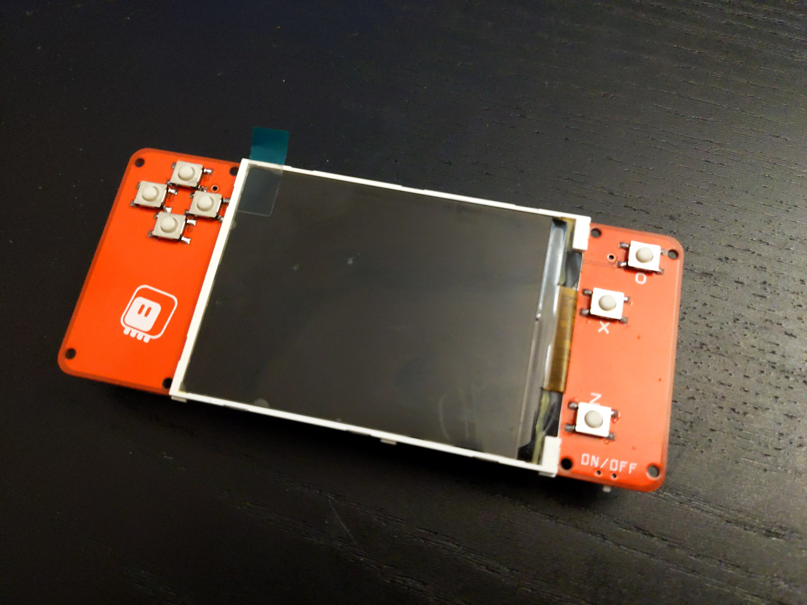
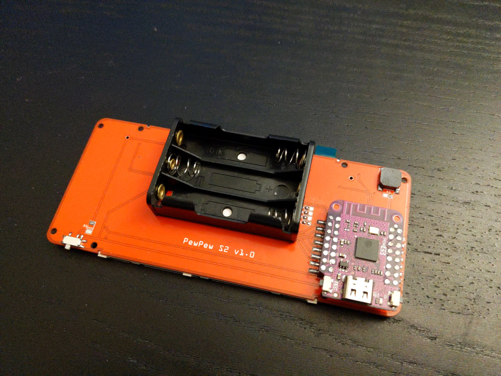

Prototype 1¶
Published on 2022-02-24 in PewPew S3.
The PCBs arrived, and I assembled one. The screen is a really nice tight fit. The S2 Mini sticks out more than I would like — perhaps in the final version I will solder it flat to the PCB, without the headers. I still need to add all the resistors — figuring out their values is more hassle than I am ready for right now. I used super- light (7gf) clicky buttons this time, and I’m really happy with how they feel.
 